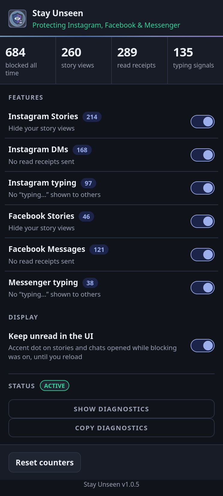
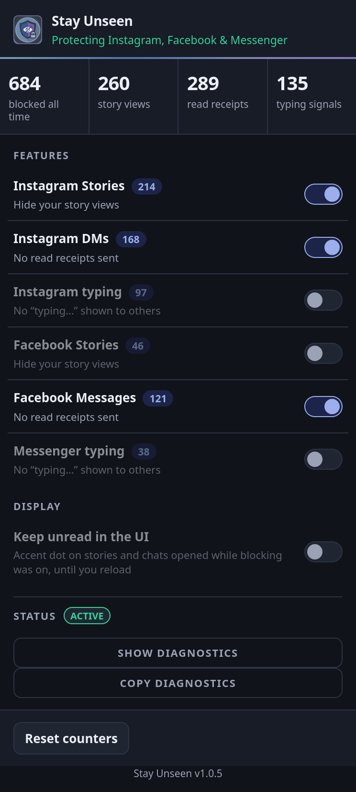
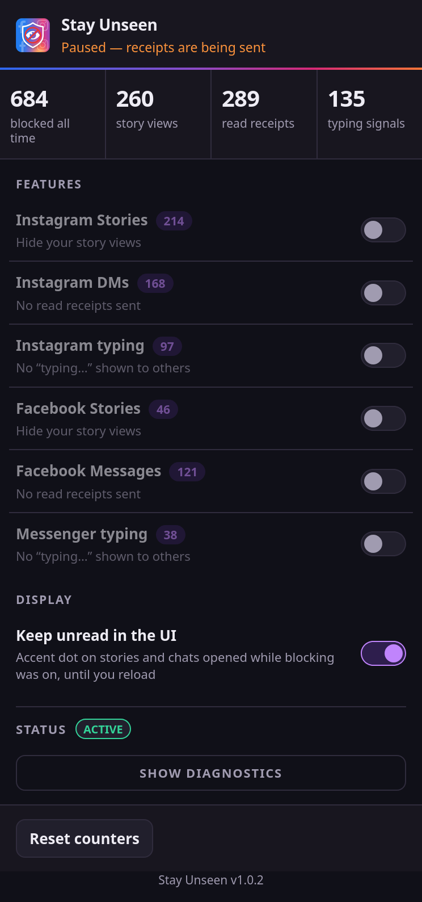
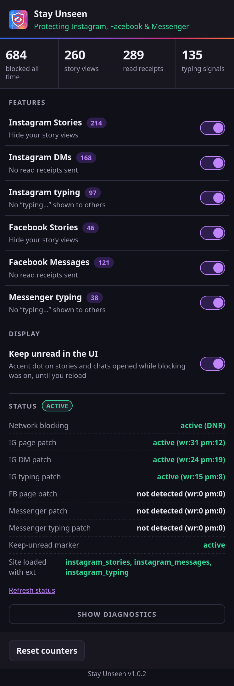
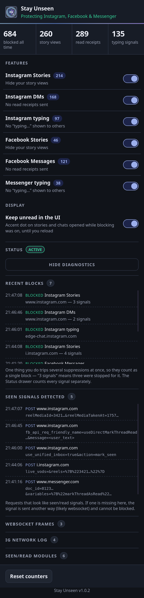
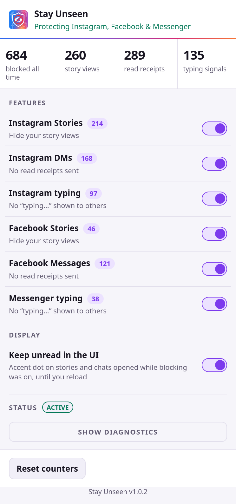
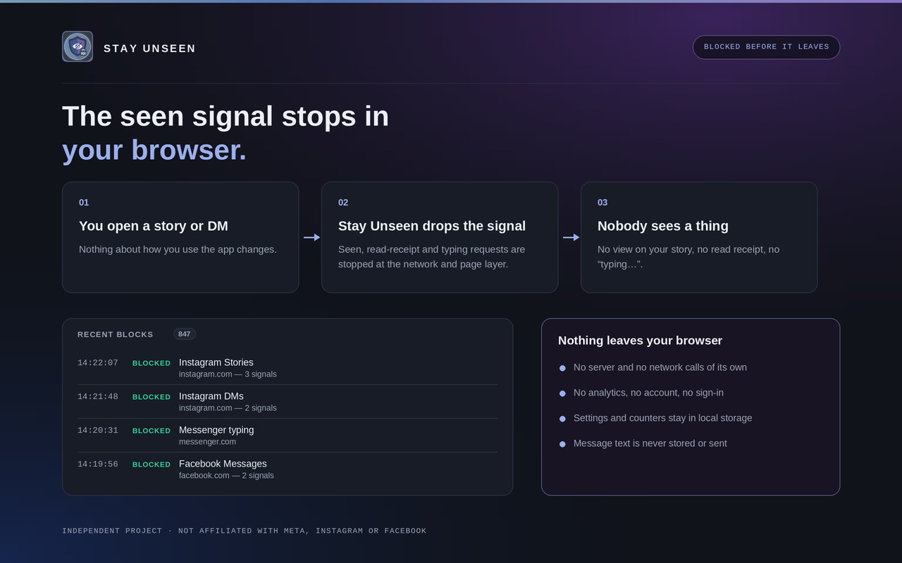
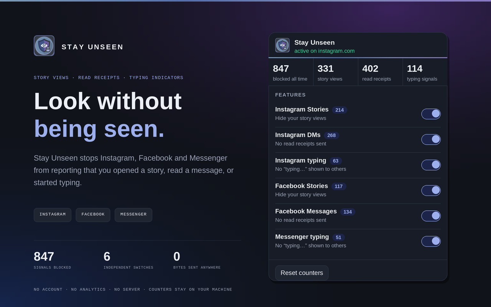
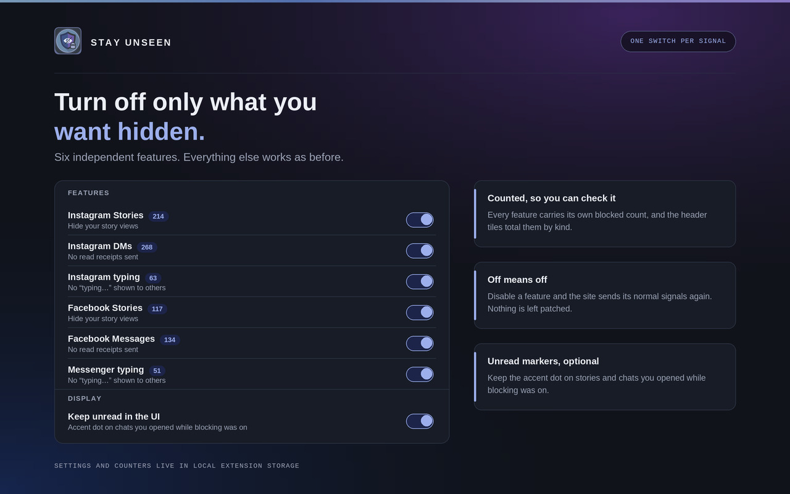

Story and reel views
The “seen” write that puts your name in the viewer list is cancelled. You still see the story; the ring still opens. Your name does not arrive.
Instagram Stories
Facebook Stories
Privacy for social browsing
Open a story, read a message, start typing a reply — Instagram, Facebook and Messenger normally report all three back to the other person. Stay Unseen stops those signals inside your browser, before they are sent. Six independent toggles, a counter for everything it blocked, and no server anywhere in the picture.
Get it

// three signals
Each of these is a separate request the site makes on your behalf. Each has its own toggle, and turning one off restores that site's normal behaviour immediately.
The “seen” write that puts your name in the viewer list is cancelled. You still see the story; the ring still opens. Your name does not arrive.
Read your DMs without the other side's message flipping to “Seen”. The mark-as-read call never leaves. Optionally the unread dot stays in your own interface too, so you can find the thread again.
Draft, rewrite and delete a reply without the bubbling dots appearing on their screen. Sent through websocket frames as often as plain requests, so both paths are covered.
// the whole interface
Real captures of the extension's own popup — its markup, its stylesheet, its script — at the exact 372 px width the browser gives it. Nothing is cropped: the taller states scroll inside the frame just as they do in the toolbar.
// default state
The header states what is currently protected. Below it, four counters: the all-time total, then story views, read receipts and typing signals separately, so you can tell which kind of signal your own browsing actually produces.
The six feature rows are the whole control surface. Display holds the one preference that changes your interface rather than the network — keeping the unread dot on threads you opened while blocking was on.

// independent control
Nothing is bundled. Here Instagram typing, Facebook Stories and Messenger typing are off — their rows dim and their toggles go grey, while Instagram Stories, Instagram DMs and Facebook Messages keep blocking.
The status line follows: it names only what is still protected. Counters are not reset by switching a feature off, so the history you have built up survives.

// nothing hidden
With everything off the header does not go quiet or neutral — it reads
Paused — receipts are being sent. A privacy tool that looks the
same whether or not it is working is worse than no tool, so this state is
deliberately loud.
This is also exactly what a normal browser does all the time. Every signal listed above is being reported.

// is it actually running
Blocking happens in two places, so the drawer reports both. Network
blocking is the browser-level ruleset — active (DNR) on
Chrome and Edge, active (webRequest) on Firefox. Each patch row
is the in-page interception for one feature, with how many signals it caught
at the network layer and in the page.
Rows honestly read not detected when a patch has not run: this
capture was taken with an Instagram tab in front, so the Facebook and
Messenger rows have nothing to report yet.

// verify it yourself
Optional, off by default, and the reason you do not have to take any of this on trust. Five capped lists: recent blocks, the requests that looked like seen signals, outgoing websocket frames, the raw Instagram network log, and the page modules the patch classified.
Message text never reaches these lists — the fields holding what you typed
are replaced with <user_text> first. One action often trips
several suppressions at once, which is why a row can read “3 signals” while
the counter moves by one.

// follows your system
There is no theme setting to find. The popup follows
prefers-color-scheme, so it matches whatever the rest of your
browser is doing.
Same markup, same layout, same accent hue — only the surface and text tokens change.
// mechanism
Some signals go out as ordinary POSTs that a network rule can cancel outright. Others are GraphQL calls and websocket frames indistinguishable by address from the traffic that makes the site work. So Stay Unseen works at both levels.
Layer 01
A packaged ruleset cancels the specific POST and PUT requests that report a
view, a read or typing activity. Chrome and Edge use
declarativeNetRequest; Firefox uses blocking
webRequest. Rules are restricted to instagram.com, facebook.com and
messenger.com and ship inside the extension — nothing is fetched at runtime.
Layer 02
At document_start, before the site's own code runs, Stay Unseen
wraps fetch, XMLHttpRequest,
WebSocket.send and the page's module registry. Outgoing bodies are
matched in memory against a fixed pattern list; the ones that are seen, read or
typing writes are dropped, and everything else passes through untouched.
Layer 03
Opening one story can trip half a dozen suppressions across both layers. The
counter folds signals for the same feature arriving within
1500 ms into one block, so the number tracks things you did
rather than internal retries. The Status drawer keeps the raw per-signal counts
if you want them.



// privacy
Stay Unseen has no server. Not an unused one, not a disabled one — there is no backend in the project. Everything it knows lives in your browser's local extension storage, and uninstalling it deletes all of it.
| Stored | Why |
|---|---|
| Six on/off settings, one per feature | So your toggles survive a restart |
| A blocked count per feature | Powers the counters and the toolbar badge |
| The last 20 blocked requests — URL, feature, timestamp | Powers the diagnostics panel, so you can confirm it is working |
| The last 30 candidate requests and 20 websocket frames, message text removed | Lets the popup show which signals it detected, so one that stops being blocked can be diagnosed |
On Instagram and Messenger, a read receipt and an ordinary message go to the
same address. Telling them apart means looking at the body. Before anything
is written to a diagnostics list, the fields holding text you typed are
replaced with <user_text> — which is also what stops a
message containing the word “typing” from being mistaken for a typing signal
and dropped.
// limitations
Worth reading before you install, so nothing here comes as a surprise later.
// install
Version 1.0.5, published to each browser's own store and built against its own manifest. Pick yours, add it, and it starts working on the next page load.
Updates arrive through the store automatically. Prefer to load it unpacked, or
want to read the code first? The per-browser source zips are still in
Chrome,
Edge and
Firefox builds —
unzip one, then use Load unpacked on chrome://extensions or
edge://extensions with developer mode on, or Load Temporary
Add-on on about:debugging#/runtime/this-firefox and pick the
folder's manifest.json.